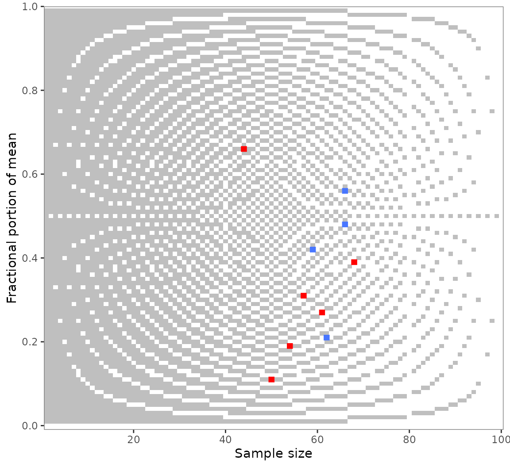
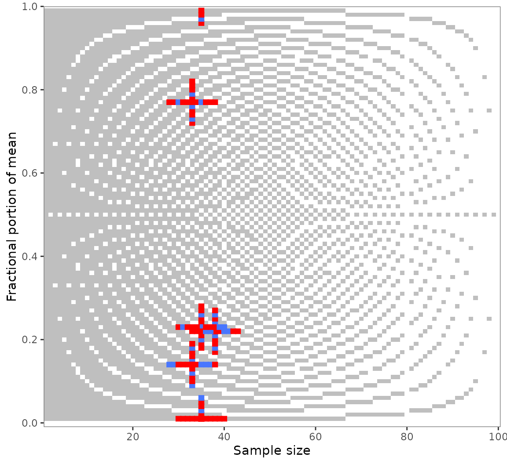
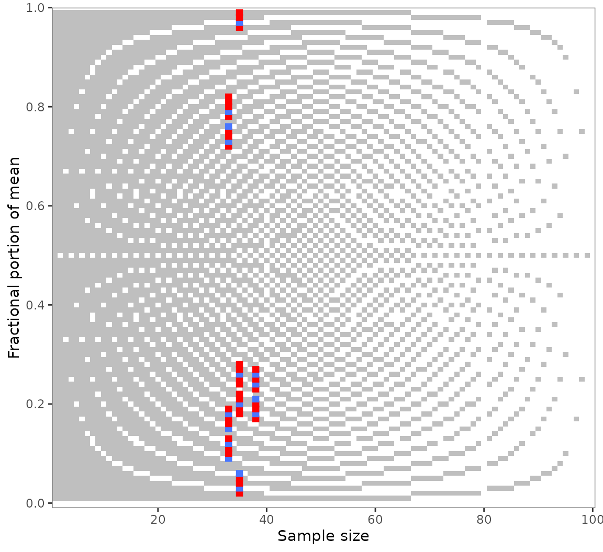
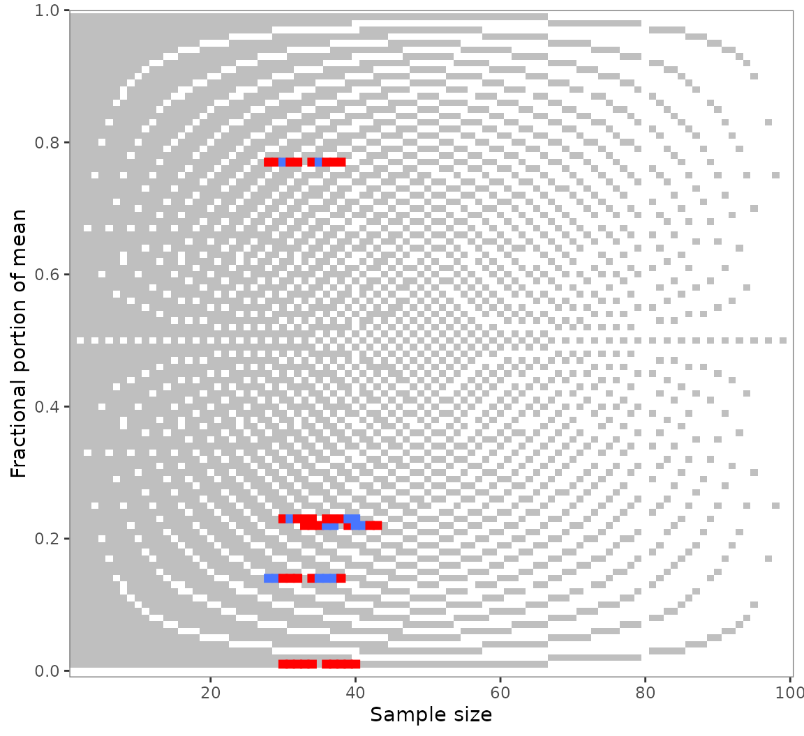

Granularity-related inconsistency of means mapped to error repeats, or GRIMMER, is a test for the mathematical consistency of reported means or proportions with the corresponding standard deviations (SDs) and sample sizes (Anaya 2016; Allard 2018).
GRIMMER builds up on GRIM (Brown and Heathers 2017). Indeed, the elegant Analytic-GRIMMER algorithm (Allard 2018) implemented here tests for GRIM-consistency before conducting its own unique tests.
This vignette covers scrutiny’s implementation of the GRIMMER test.
It’s an adapted version of the GRIM
vignette because both the tests themselves and their implementations
in scrutiny are very similar. If you are familiar with scrutiny’s
grim_*() functions, much of the present vignette will seem
quite natural to you.
The vignette has the following sections — to get started, though, you only need the first one:
The basic
grimmer()function and a specialized mapping function,grimmer_map().The
audit()method for summarizinggrimmer_map()’s results.The visualization function
grim_plot(), which also works for GRIMMER.Testing numeric sequences with
grimmer_map_seq().Handling unknown group sizes with
grimmer_map_total_n().
Basic GRIMMER testing
Few cases: grimmer()
To test if a reported mean of 7.3 on a granular scale is GRIMMER-consistent with an SD of 2.51 and a sample size of 12, run this:
grimmer(x = "7.3", sd = "2.51", n = 12)
#> 7.3
#> FALSENote that x, the reported mean, needs to be a string.
The reason is that strings preserve trailing zeros, which can be crucial
for GRIMMER-testing. Numeric values don’t, and even converting them to
strings won’t help. A workaround for larger numbers of such values,
restore_zeros(), is discussed in
vignette("wrangling").
grimmer() has some further parameters, but all of them
can be used from within grimmer_map(). The other parameters
will be discussed in that context because grimmer_map() is
often the more useful function in practice. Furthermore, although
grimmer() is vectorized, grimmer_map() is
safer and more convenient for testing multiple combinations of means,
SDs, and sample sizes.
Many cases: grimmer_map()
If you want to GRIMMER-test more than a handful of cases, the
recommended way is to enter them into a data frame and to run
grimmer_map() on the data frame. Two different ways to do
that are discussed in vignette("wrangling"), but here, I
will only describe an easily accessible solution for a single table.
Copy summary data from a PDF file and paste them into
tibble::tribble(), which is available via scrutiny:
flying_pigs1 <- tibble::tribble(
~x, ~sd, ~n,
"8.9", "2.81", 25,
"2.6", "2.05", 25,
"7.2", "2.89", 25,
"3.6", "3.11", 25,
"9.2", "7.13", 25,
"10.4", "2.53", 25,
"7.3", "3.14", 25
)Use RStudio’s multiple cursors to draw quotation marks around all the
x and sd values, and to set commas at the end.
See vignette("wrangling"), section With copy and
paste, if you are not sure how to do that.
Now, simply run grimmer_map() on that data frame:
grimmer_map(flying_pigs1)
#> # A tibble: 7 × 5
#> x sd n consistency reason
#> <chr> <chr> <dbl> <lgl> <chr>
#> 1 8.9 2.81 25 FALSE GRIMMER inconsistent (test 3)
#> 2 2.6 2.05 25 FALSE GRIMMER inconsistent (test 3)
#> 3 7.2 2.89 25 TRUE Passed all
#> 4 3.6 3.11 25 TRUE Passed all
#> 5 9.2 7.13 25 TRUE Passed all
#> 6 10.4 2.53 25 TRUE Passed all
#> 7 7.3 3.14 25 TRUE Passed allThe x and n columns are the same as in the
input. By default, the number of items composing the mean
is assumed to be 1. The main result, consistency, is the
GRIMMER consistency of the former three columns.
The reason column says why a set of values was
inconsistent. To be GRIMMER-consistent, a value set needs to pass four
separate tests: the three GRIMMER tests by Allard
(2018) and the more basic GRIM test. Here, the two inconsistent
values passed GRIM as well as the first two GRIMMER tests, but failed
the third one. All consistent value sets are marked as
"Passed all" in the "reason" column.
Here is a quick reference for the three GRIMMER tests. See Allard (2018) for an explanation.
- The reconstructed sum of squared observations must be a whole number.
- The reconstructed SD must match the reported one.
- The parity of the reconstructed sum of squared observations must match the parity of the reconstructed sum of integers of which the reported means are fractions; i.e., either both are even or both are odd.
Scale items
If a mean is composed of multiple items, set the items
parameter to that number. Below are hypothetical means of a three-items
scale. With the single-item default, half of these are wrongly flagged
as GRIM-inconsistent (true GRIMMER example below):
flying_pigs2 <- tibble::tribble(
~x, ~sd, ~n,
"5.90", "2.19", 40,
"5.71", "1.42", 40,
"3.50", "1.81", 40,
"3.82", "2.43", 40,
"4.61", "1.92", 40,
"5.24", "2.51", 40
)
flying_pigs2 %>%
grimmer_map() # default is wrong here!
#> # A tibble: 6 × 5
#> x sd n consistency reason
#> <chr> <chr> <dbl> <lgl> <chr>
#> 1 5.90 2.19 40 TRUE Passed all
#> 2 5.71 1.42 40 FALSE GRIM inconsistent
#> 3 3.50 1.81 40 TRUE Passed all
#> 4 3.82 2.43 40 TRUE Passed all
#> 5 4.61 1.92 40 FALSE GRIM inconsistent
#> 6 5.24 2.51 40 FALSE GRIM inconsistentYet, all of them are consistent if the correct number of items is stated:
flying_pigs2 %>%
grimmer_map(items = 3)
#> # A tibble: 6 × 5
#> x sd n consistency reason
#> <chr> <chr> <dbl> <lgl> <chr>
#> 1 5.90 2.19 120 TRUE Passed all
#> 2 5.71 1.42 120 TRUE Passed all
#> 3 3.50 1.81 120 TRUE Passed all
#> 4 3.82 2.43 120 TRUE Passed all
#> 5 4.61 1.92 120 TRUE Passed all
#> 6 5.24 2.51 120 TRUE Passed allIt is also possible to include an items column in the
data frame instead. This is helpful if the rows have different numbers
of items:
flying_pigs3 <- tibble::tribble(
~x, ~sd, ~n, ~items,
"6.92", "2.19", 30, 1,
"3.48", "1.42", 30, 1,
"1.59", "1.81", 30, 2,
"2.61", "2.43", 30, 2,
"4.04", "1.92", 30, 3,
"4.50", "2.51", 30, 3,
)
flying_pigs3 %>%
grimmer_map()
#> # A tibble: 6 × 5
#> x sd n consistency reason
#> <chr> <chr> <dbl> <lgl> <chr>
#> 1 6.92 2.19 30 FALSE GRIM inconsistent
#> 2 3.48 1.42 30 FALSE GRIM inconsistent
#> 3 1.59 1.81 60 FALSE GRIM inconsistent
#> 4 2.61 2.43 60 FALSE GRIM inconsistent
#> 5 4.04 1.92 90 TRUE Passed all
#> 6 4.50 2.51 90 TRUE Passed allThe items values are multiplied by the n
values. By default, the product is shown as n in the output
(merge_items = TRUE), but overriding this default won’t
affect the test results.
However, if we remove the items column, crucial
information is missing. As a consequence, the last two values are
wrongly flagged as inconsistent, one of them by GRIMMER:
flying_pigs3 %>%
dplyr::select(-items) %>%
grimmer_map()
#> # A tibble: 6 × 5
#> x sd n consistency reason
#> <chr> <chr> <dbl> <lgl> <chr>
#> 1 6.92 2.19 30 FALSE GRIM inconsistent
#> 2 3.48 1.42 30 FALSE GRIM inconsistent
#> 3 1.59 1.81 30 FALSE GRIM inconsistent
#> 4 2.61 2.43 30 FALSE GRIM inconsistent
#> 5 4.04 1.92 30 FALSE GRIM inconsistent
#> 6 4.50 2.51 30 FALSE GRIMMER inconsistent (test 3)Summarizing results with audit()
Following up on a call to grimmer_map(), the generic
function audit() summarizes GRIMMER test results:
flying_pigs1 %>%
grimmer_map() %>%
audit()
#> # A tibble: 1 × 7
#> incons_cases all_cases incons_rate fail_grim fail_test1 fail_test2 fail_test3
#> <int> <int> <dbl> <int> <int> <int> <int>
#> 1 2 7 0.286 0 0 0 2These columns are —
incons_cases: number of GRIMMER-inconsistent value sets.all_cases: total number of value sets.incons_rate: proportion of GRIMMER-inconsistent value sets.fail_grim,fail_test1,fail_test2,fail_test3: number of value sets failing the GRIM test or one of the three GRIMMER tests, respectively (see Allard 2018).
Visualizing results with grim_plot()
GRIMMER does not currently have a dedicated visualization function in
scrutiny. However, grim_plot() will accept the output of
grimmer_map() just as well as that from
grim_map():
flying_pigs4 <- tibble::tribble(
~x, ~sd, ~n,
"7.19", "1.19", 54,
"4.56", "2.56", 66,
"0.42", "1.29", 59,
"1.31", "3.50", 57,
"3.48", "3.65", 66,
"4.27", "2.86", 61,
"6.21", "2.15", 62,
"3.11", "3.17", 50,
"5.39", "2.37", 68,
"5.66", "1.11", 44,
)
flying_pigs4 %>%
grimmer_map() %>%
grim_plot()
#> → Also visualizing 2 GRIMMER inconsistencies.
However, grim_plot() will fail with any object not
returned by either of these two functions:
grim_plot(mtcars)
#> Error in `grim_plot()`:
#> ! `grim_plot()` needs GRIM or GRIMMER test results.
#> ✖ `data` is not the output of `grim_map()`, `grim_map_seq()`, or
#> `grim_map_total_n()`; or of the respective `grimmer_*()` functions.
#> ℹ The only exception is an "empty" plot that shows the background raster but no
#> empirical test results. Create such a plot with `show_data = FALSE`.See the GRIM
vignette section on grim_plot() for more
information.
Testing numeric sequences with grimmer_map_seq()
GRIMMER analysts might be interested in a mean or percentage value’s
numeric neighborhood. Suppose you found multiple GRIMMER inconsistencies
as in out example pigs5 data. You might wonder whether they
are due to small reporting or computing errors.
Use grimmer_map_seq() to GRIMMER-test the values
surrounding the reported means and sample sizes:
out_seq1 <- grimmer_map_seq(pigs5)
out_seq1
#> # A tibble: 150 × 8
#> x sd n consistency reason diff_var case var
#> <chr> <chr> <int> <lgl> <chr> <int> <int> <chr>
#> 1 7.17 5.30 38 FALSE GRIM inconsistent -5 1 x
#> 2 7.18 5.30 38 TRUE Passed all -4 1 x
#> 3 7.19 5.30 38 FALSE GRIM inconsistent -3 1 x
#> 4 7.20 5.30 38 FALSE GRIM inconsistent -2 1 x
#> 5 7.21 5.30 38 TRUE Passed all -1 1 x
#> 6 7.23 5.30 38 FALSE GRIM inconsistent 1 1 x
#> 7 7.24 5.30 38 TRUE Passed all 2 1 x
#> 8 7.25 5.30 38 FALSE GRIM inconsistent 3 1 x
#> 9 7.26 5.30 38 TRUE Passed all 4 1 x
#> 10 7.27 5.30 38 FALSE GRIM inconsistent 5 1 x
#> # ℹ 140 more rowsSummaries with audit_seq()
As this output is a little unwieldy, run audit_seq() on
the results:
audit_seq(out_seq1)
#> # A tibble: 5 × 17
#> x sd n consistency hits_total hits_x hits_sd hits_n diff_x
#> <chr> <chr> <int> <lgl> <int> <int> <int> <int> <int>
#> 1 7.22 5.30 38 FALSE 8 4 0 4 1
#> 2 5.23 2.55 35 FALSE 15 2 10 3 3
#> 3 6.77 2.18 33 FALSE 5 3 0 2 1
#> 4 7.01 6.68 35 FALSE 4 4 0 0 1
#> 5 3.14 5.32 33 FALSE 9 4 0 5 1
#> # ℹ 8 more variables: diff_x_up <int>, diff_x_down <int>, diff_sd <int>,
#> # diff_sd_up <int>, diff_sd_down <int>, diff_n <int>, diff_n_up <int>,
#> # diff_n_down <int>Here is what the output columns mean:
xandnare the original inputs, reconstructed and tested forconsistencyhere.hitsis the number of GRIMMER-consistent value combinations found within the specifieddispersionrange.diff_xreports the absolute difference betweenxand the next consistent dispersed value (in dispersion steps, not the actual numeric difference).diff_x_upanddiff_x_downreport the difference to the next higher or lower consistent value, respectively.diff_n,diff_n_up, anddiff_n_downdo the same forn.
The default for dispersion is 1:5, for five
steps up and down. When the dispersion sequence gets
longer, the number of hits tends to increase:
out_seq2 <- grimmer_map_seq(pigs5, dispersion = 1:10)
audit_seq(out_seq2)
#> # A tibble: 5 × 17
#> x sd n consistency hits_total hits_x hits_sd hits_n diff_x
#> <chr> <chr> <int> <lgl> <int> <int> <int> <int> <int>
#> 1 7.22 5.30 38 FALSE 15 8 0 7 1
#> 2 5.23 2.55 35 FALSE 30 6 18 6 3
#> 3 6.77 2.18 33 FALSE 10 4 0 6 1
#> 4 7.01 6.68 35 FALSE 8 8 0 0 1
#> 5 3.14 5.32 33 FALSE 14 7 0 7 1
#> # ℹ 8 more variables: diff_x_up <int>, diff_x_down <int>, diff_sd <int>,
#> # diff_sd_up <int>, diff_sd_down <int>, diff_n <int>, diff_n_up <int>,
#> # diff_n_down <int>Visualizing GRIMMER-tested sequences
It’s curious what happens when we plot the output of
grimmer_map_seq(). Like regular GRIM or GRIMMER plots,
however, it does give us a sense of how many tested values are
consistent:
grim_plot(out_seq1)
#> → Also visualizing 3 GRIMMER inconsistencies.
The crosses appear because grimmer_map_seq() creates
sequences around both x and n. Restrict this
process to any one of these with the var argument:
out_seq1_only_x <- grimmer_map_seq(pigs5, var = "x")
out_seq1_only_n <- grimmer_map_seq(pigs5, var = "n")
grim_plot(out_seq1_only_x)
#> → Also visualizing 1 GRIMMER inconsistency.
grim_plot(out_seq1_only_n)
#> → Also visualizing 2 GRIMMER inconsistencies.
Handling unknown group sizes with
grimmer_map_total_n()
Problems from underreporting
Unfortunately, some studies that report group averages don’t report
the corresponding group sizes — only a total sample size. This makes any
direct GRIMMER-testing impossible because only x values are
known, not n values. All that is feasible here in terms of
GRIMMER is to take a number around half the total sample size, go up and
down from it, and check which hypothetical group sizes are
consistent with the reported group means.
grimmer_map_total_n() semi-automates this process,
motivated by a recent GRIM analysis (Bauer and
Francis 2021).
Here is an example:
flying_pigs5 <- tibble::tribble(
~x1, ~x2, ~sd1, ~sd2, ~n,
"3.43", "5.28", "1.09", "2.12", 70,
"2.97", "4.42", "0.43", "1.65", 65
)
out_total_n <- grimmer_map_total_n(flying_pigs5)
out_total_n
#> # A tibble: 48 × 9
#> x sd n n_change consistency both_consistent reason case dir
#> <chr> <chr> <int> <int> <lgl> <lgl> <chr> <int> <fct>
#> 1 3.43 1.09 35 0 TRUE FALSE Passed all 1 forth
#> 2 5.28 2.12 35 0 FALSE FALSE GRIM inco… 1 forth
#> 3 3.43 1.09 34 -1 FALSE FALSE GRIM inco… 1 forth
#> 4 5.28 2.12 36 1 TRUE FALSE Passed all 1 forth
#> 5 3.43 1.09 33 -2 FALSE FALSE GRIM inco… 1 forth
#> 6 5.28 2.12 37 2 FALSE FALSE GRIM inco… 1 forth
#> 7 3.43 1.09 32 -3 FALSE FALSE GRIM inco… 1 forth
#> 8 5.28 2.12 38 3 FALSE FALSE GRIM inco… 1 forth
#> 9 3.43 1.09 31 -4 FALSE FALSE GRIM inco… 1 forth
#> 10 5.28 2.12 39 4 FALSE FALSE GRIMMER i… 1 forth
#> # ℹ 38 more rows
audit_total_n(out_total_n)
#> # A tibble: 2 × 10
#> x1 x2 sd1 sd2 n hits_total hits_forth hits_back scenarios_total
#> <chr> <chr> <chr> <chr> <int> <int> <int> <int> <int>
#> 1 3.43 5.28 1.09 2.12 70 0 0 0 12
#> 2 2.97 4.42 0.43 1.65 65 0 0 0 12
#> # ℹ 1 more variable: hit_rate <dbl>See the GRIM vignette, section Handling unknown group sizes with
grim_map_total_n(), for a more comprehensive case
study. It uses grim_map_total_n(), which is the same as
grimmer_map_total_n() but only for GRIM.